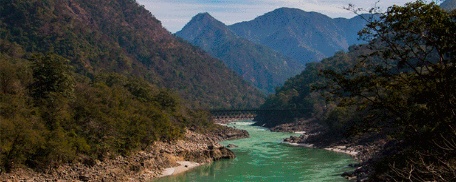

.webp)
Cualquier organismo obtiene del medioambiente el sustento necesario para garantizar su supervivencia, no solo alimento, sino, también, refugio, aire o energía. Por eso, mantener su equilibrio resulta fundamental para asegurar la vida tal y como se conoce hoy en día. En el caso de los seres humanos, precisamos del consumo de gran cantidad de recursos naturales para comer, vestirnos o, incluso, para fabricar herramientas y otros productos que luego utilizamos en nuestras actividades diarias. Cuidar el ecosistema para hacer sostenible el uso de estos recursos y evitar su desaparición no es, por lo tanto, una filosofía simplemente bondadosa en relación con el planeta en el que vivimos, sino que nos va nuestra propia vida en ello.
A partir de mediados del siglo XVIII en adelante, el despegue de la Revolución Industrial significó la sobreexplotación de los recursos naturales, con la presencia de agentes químicos, físicos o biológicos que han tenido un impacto negativo sobre el equilibrio de los ecosistemas, aumentando, de manera exponencial, la contaminación del medioambiente. La extracción y la utilización sin control de los recursos minerales, la destrucción de los bosques, el crecimiento de la agricultura y de la ganadería intensivas, el desarrollo imparable de las ciudades o la apuesta por las energías no renovables y por la utilización de los combustibles fósiles han provocado unos niveles de deterioro de muchos ecosistemas prácticamente irreparables. En el caso del agua, los desechos industriales y domésticos o la pesca indiscriminada han diezmado a muchas especies, cambiando los sistemas de equilibrio, por ejemplo, en la pirámide alimentaria. En cuanto a los recursos naturales, el abuso de la minería para producir petróleo o elementos para la industria han llenado muchos ecosistemas de desechos no biodegradables, que tardarán varios siglos en poder eliminarse de un modo natural. Por su parte, el uso de combustibles fósiles, como el carbón, el petróleo o el gas natural, en industrias, sistemas de calefacción o medios de transporte, libera cada día toneladas de gases nocivos, como el CO2, a la atmósfera, contribuyendo, de este modo, al calentamiento global. En cuanto al suelo, los pesticidas y los residuos plásticos han provocado un deterioro en sus propiedades naturales prácticamente imposible de revertir.
.jpg)
Durante las últimas décadas, la sociedad ha ido tomando conciencia de la necesidad urgente de adoptar estrategias de desarrollo sostenible que permitan disminuir los impactos negativos del desarrollo sobre el medio ambiente. La gestión de los residuos urbanos es una parte esencial de estas estrategias, ya que influye de manera decisiva en la sostenibilidad ambiental de las ciudades. Dicha gestión está hoy sujeta a una legislación estricta, circunstancia que, unida a los notables avances técnicos realizados, ha permitido minimizar su incidencia ambiental y que de los tratamientos aplicados a los residuos se deriven múltiples beneficios ambientales. Los procesos desarrollados en el Parque Tecnológico de Valdemingómez suponen numerosos e importantes beneficios ambientales. La mejora de estos beneficios depende, en buena medida, de la colaboración ciudadana, del esfuerzo individual de cada colombiano para realizar una correcta separación de los residuos, que facilite la recuperación de todo lo aprovechable. De este modo, aumentará la eficacia de los tratamientos aplicados y, con ello, sus efectos favorables sobre el medio ambiente.
